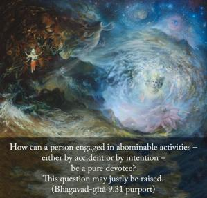

He quickly becomes righteous and attains lasting peace. O son of Kuntī, declare it boldly that My devotee never perishes.

This should not be misunderstood. In the Seventh Chapter the Lord says that one who is engaged in mischievous activities cannot become a devotee of the Lord. One who is not a devotee of the Lord has no good qualifications whatsoever. The question remains, then, How can a person engaged in abominable activities – either by accident or by intention – be a pure devotee? This question may justly be raised. The miscreants, as stated in the Seventh Chapter, who never come to the devotional service of the Lord, have no good qualifications, as is stated in the Śrīmad-Bhāgavatam. Generally, a devotee who is engaged in the nine kinds of devotional activities is engaged in the process of cleansing all material contamination from the heart. He puts the Supreme Personality of Godhead within his heart, and all sinful contaminations are naturally washed away. Continuous thinking of the Supreme Lord makes him pure by nature. According to the Vedas, there is a certain regulation that if one falls down from his exalted position he has to undergo certain ritualistic processes to purify himself. But here there is no such condition, because the purifying process is already there in the heart of the devotee, due to his remembering the Supreme Personality of Godhead constantly. Therefore, the chanting of Hare Kṛṣṇa, Hare Kṛṣṇa, Kṛṣṇa Kṛṣṇa, Hare Hare/ Hare Rāma, Hare Rāma, Rāma Rāma, Hare Hare should be continued without stoppage. This will protect a devotee from all accidental falldowns. He will thus remain perpetually free from all material contaminations.